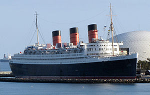
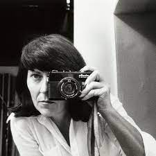

Newton was interned by British authorities while in Singapore and was sent to Australia on board the Queen Mary, arriving in Sydney on 27 September 1940.[5] Internees travelled to the camp at Tatura, Victoria by train under armed guard. He was released from internment in 1942 and briefly worked as a fruit picker in Northern Victoria. In August 1942, he enlisted with the Australian Army and worked as a truck driver. After the war in 1945, he became a British subject and changed his name to Newton in 1946.
In 1948, he married actress June Browne, who performed under the stage name June Brunell. She later became a successful photographer under the ironic pseudonym Alice Springs (after Alice Springs, the central Australian town).
